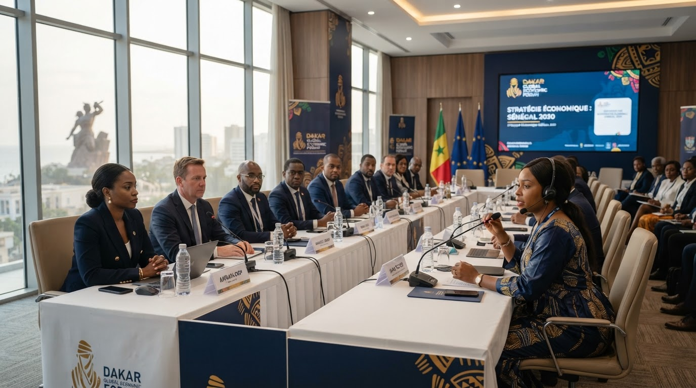
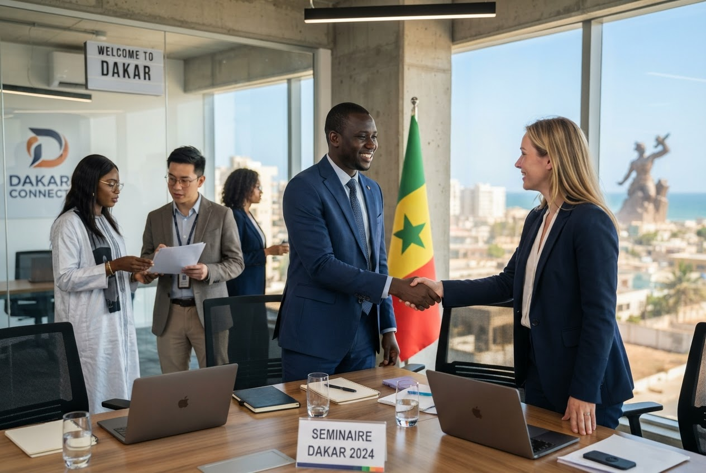
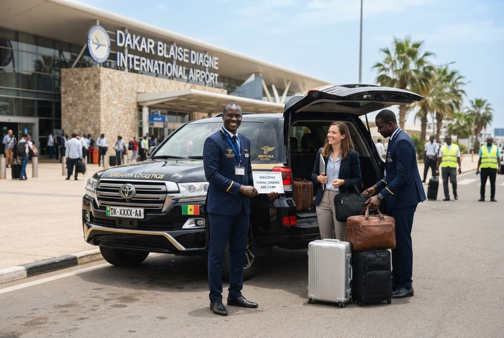

Site guarding
Coordination of guarding requests for offices, business premises and mission sites through duly authorised providers.
Dakar · Senegal · International missions
SCS helps you identify and coordinate solutions suited to your context in Senegal, working with qualified providers where the service requires it.

Areas of support
Coordination of guarding requests for offices, business premises and mission sites through duly authorised providers.
Access procedures, visitor management and secure reception arrangements suited to site requirements.

Security planning support for meetings, conferences, business events and visiting delegations.

Coordination with specialist suppliers for CCTV, alarm systems and related equipment.
Needs assessment and coordination of appropriate advisory support for the operating context.
Local coordination of security and logistics requirements for teams travelling in Senegal.
Regulated services are carried out only by duly authorised providers. All services are confirmed following a review of requirements and availability.
Share your site, event or mission details, dates and the support you need.
Request information